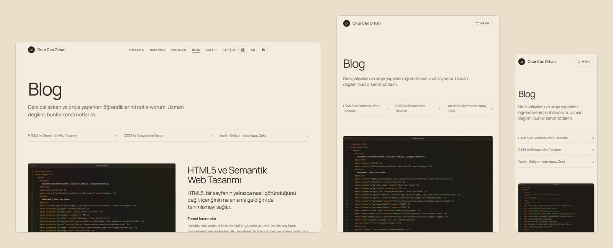
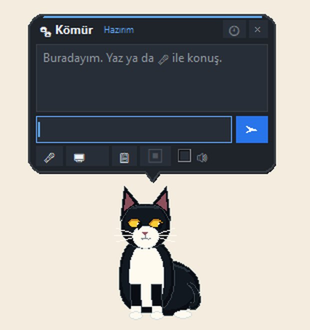

Ders çalışırken ve proje yaparken öğrendiklerimi not alıyorum. Uzman değilim, bunlar kendi notlarım.
Bu sitenin Hakkımda sayfasının kaynak kodu: header, main, section ve footer etiketleri.
HTML5 ve Semantik Web Tasarımı
HTML5, bir sayfanın yalnızca nasıl göründüğünü değil, içeriğinin ne anlama geldiğini de tanımlamayı sağlar.
Temel kavramlar
header, nav, main, article ve footer gibi semantik etiketler sayfanın bölümlerini belirginleştirir. Bu, erişilebilirlik teknolojileri ve arama motorları için içeriğin anlaşılmasını kolaylaştırır.
Uygulama ve iyi pratikler
İyi bir HTML sayfasında başlık hiyerarşisi tutarlı olmalıdır. Bir h1 ana konuyu anlatırken h2 başlıkları alt bölümleri ayırır. Form etiketleri alanları açıkça tanımlamalı; görsellerin alt metinleri amacını belirtmelidir.
Sonuç
Bu sitede her sayfa header, main ve footer ile kurulu. CSS'i kapatınca bile sayfa düzgün bir belge gibi okunuyor; bunu deneyerek gördüm.

Aynı Projeler sayfası geniş ekranda, tablette ve telefonda.
CSS3 ile Responsive Tasarım
Responsive tasarım, bir sitenin farklı ekran genişliklerinde okunabilir ve kullanılabilir olmasını amaçlar.
Temel kavramlar
CSS Grid çok sütunlu kart düzenleri için, Flexbox ise menüler ve tek boyutlu hizalamalar için kullanışlıdır. Media query kuralları ekran daraldığında sütun sayısını veya navigasyon davranışını değiştirebilir.
Uygulama ve iyi pratikler
Sabit genişlikler yerine max-width, yüzde ve clamp gibi esnek ölçüler kullanmak taşmayı azaltır. Mobilde dokunmatik hedefler yeterince büyük olmalı, metinler yatay kaydırma gerektirmemelidir.
Sonuç
Bu sitede proje kartları geniş ekranda iki sütun, telefonda tek sütun. Bunu media query ile değil, çoğunlukla grid ve clamp ile yaptım.

Kömür'ün sohbet balonu. Cevaplar bilgisayarda çalışan yerel bir modelden geliyor.
Yazılım Geliştirmede Yapay Zekâ
Yapay zekâ araçları kod üretimi, açıklama, hata ayıklama ve test senaryosu hazırlamada yardımcı olabilir.
Temel kavramlar
Bir modelin önerdiği kod doğrudan doğru kabul edilmemelidir. Üretilen kod gözden geçirilmeli, bağımlılıklar incelenmeli ve otomatik testler çalıştırılmalıdır.
Uygulama ve iyi pratikler
Geliştirici, araca açık gereksinimler vererek daha iyi sonuç alabilir. Örneğin “mobil uyumlu bir menü yaz” demek yerine klavye erişimi, ekran boyutları ve hata durumları da belirtilmelidir.
Sonuç
Bu siteyi ve Kömür'ü yaparken yapay zekâ araçlarından çok yardım aldım. Ama önerilen kodun bir kısmı çalışmadı; her seferinde deneyip düzeltmem gerekti. Aracı kullanmak, ne istediğini bilmeyi gerektiriyor.